Golden Gate Bridge
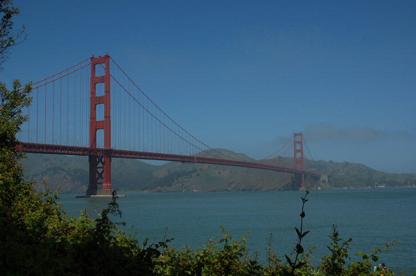
De huizenprijzen in San Francisco behoren tot de hoogste van de wereld. Het maakt niet uit in welke wijk je iets zoekt, belachelijk duur is het overal. Ik begin nu te begrijpen waarom dit zo is: élk plekje dat je maar kunt vinden heeft een fantastisch uitzicht. Het is heerlijk om in een willekeurig park te gaan zitten en te kijken hoe de wereld aan je voorbij trekt. Ik denk dat ik maar eens bij de universiteit ga kijken om te zien of ze hier geen leuke opleidingen hebben! Het grootste nadeel dat ik heb kunnen ontdekken is de voortdurend waaiende koude wind.
Gisteravond in het hostel een hoop mensen leren kennen, was erg gezellig! En er was zelfs iemand zo slim om Heineken mee te nemen, dat is echt een verademing na Budweiser… De echte hippies hadden zelfs joints geregeld, dus het voelde – en rook – alsof ik thuis was. Toen ik om twee naar bed ging lag er helaas iemand op mijn kamer te snurken. Probeer dan maar eens in slaap te komen! iPod aan en handen op m’n oren, maar het gesnurk blijf je horen. Uiteindelijk toch in slaap gevallen om ’s ochtends wakker te worden met de zon die door de gordijnen schijnt. Perfect weer om de Golden Gate Bridge te bezoeken!
Vrijwel iedereen onderneemt deze trip met een (gehuurde) fiets, maar dit leek me geen geschikte manier omdat ik ook nog een hoop foto’s wilde gaan schieten. Mijn voeten zagen de bui al hangen: dat wordt weer lopen. De wandeling naar de brug toe is zo’n 8 kilometer en de brug zelf is ook nog meer dan 2,5 kilometer lang. Voor mijn voeten die mij al dagenlang overal naar toe brengen is dit geen pretje, maar met alles wat ze te zien krijgen hoeven ze niet veel te klagen.
Na een lange tocht waarbij het lijkt alsof je maar niet dichterbij de brug komt, bereik ik eindelijk de hoofdattractie van vandaag. Mijn eerste taak is het zoeken van het bord waarmee Gerard een heleboel jaar geleden ook op de foto is geweest. Kauterend over wat trapjes en paadjes bereik ik de parkeerplaats waar inderdaad datzelfde bord staat. Het lijkt erop dat het nog precies zo is als toen Gerard hier ooit was.
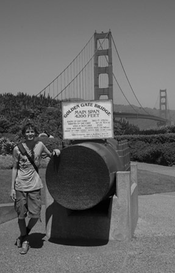
Op deze foto is te zien dat de – koude – wind al flink heeft huisgehouden in mijn haren. Om het een beetje warm te houden besluit ik snel door te lopen, de brug op. Ze zijn op dit moment bezig met werkzaamheden aan de brug, met als gevolg dat het eerste stuk is voorzien van een lelijk hekwerk. Wel leuk om te zien is dat zelfs de chemische toiletdingen in de kleur van de brug geschilderd zijn. Na de werkzaamheden kan ik eindelijk genieten van het prachtige uitzicht op de baai en het omringende landschap. Ook de pilaren van de brug zelf zijn erg indrukwekkend evenals de kabels die het geheel overeind moeten houden. Ondanks het lawaai van de langsrazende auto’s over zes banen en de ijskoude wind die je alle kanten op probeert te trekken is het absoluut de moeite waard. Al is het maar om te kunnen zeggen dat je ‘er’ geweest bent. Om dit te kunnen bewijzen had ik ook een trui in de giftshop kunnen kopen, maar ik vond 40 dollar toch iets te veel van het goede. Lopend de brug overgaan is de beste manier om mooie plaatjes te schieten, maar het is ook wel een erg lange brug. Het probleem is dat ik over dezelfde brug terug zal moeten…
Na de brug over te zijn geweest heb ik me dan ook zo snel mogelijk weer omgedraaid, voornamelijk omdat het te koud was en er toch niet veel spannends te beleven valt – tenzij je nog een aantal kilometers verder loopt naar bijvoorbeeld Sausalito, maar dat ga ik morgen met de auto doen. Gelukkig komt Arnold Schwarznegger to the rescue! Hij schijnt namelijk ooit gezegd te hebben dat public transportation gratis moet zijn, en blijkbaar vonden ze het leuk om dat vandaag uit te proberen. Snel dus in een bus gesprongen die mij het vervelendste stuk van de wandelroute uit handen (voeten) neemt, om ter hoogte van Fort Mason weer uit te stappen. Op de heenweg ben ik namelijk al door dit prachtige park gewandeld en het leek me geen slecht idee om hier even uit te rusten. Na een tijdje in het gras gezeten te hebben en van de omgeving genoten te hebben heb ik mijn weg vervolgd terug naar het hostel waar zometeen gratis eten te vinden zal zijn!
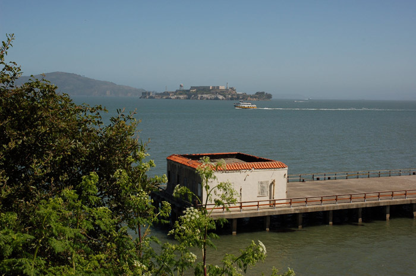 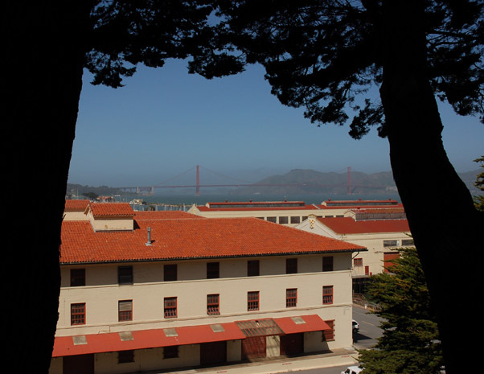 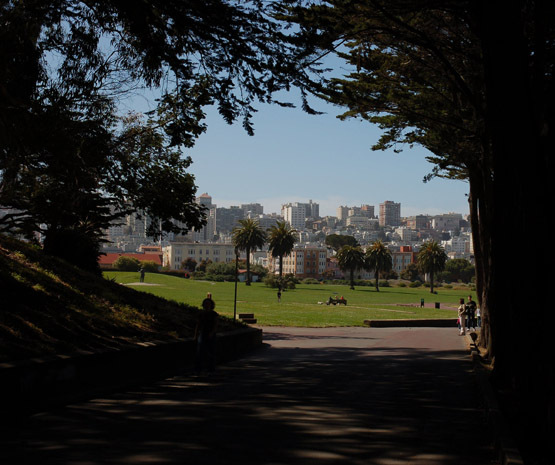 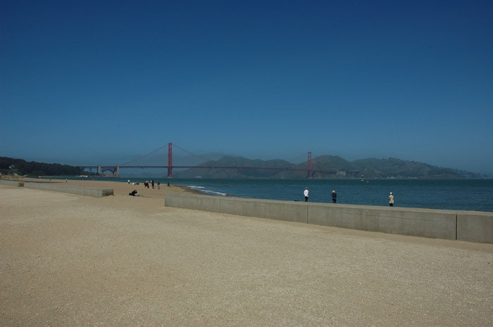 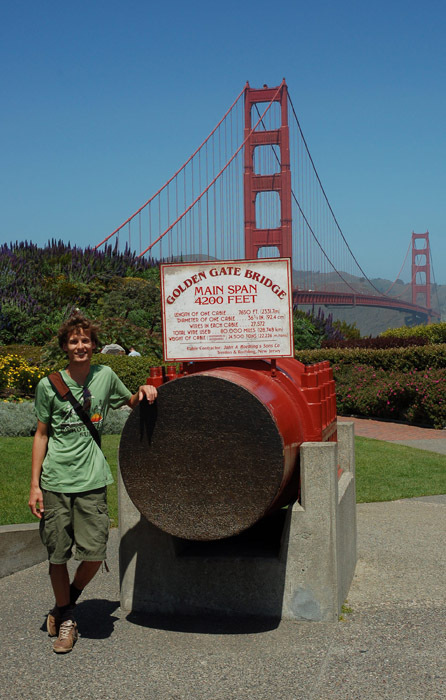 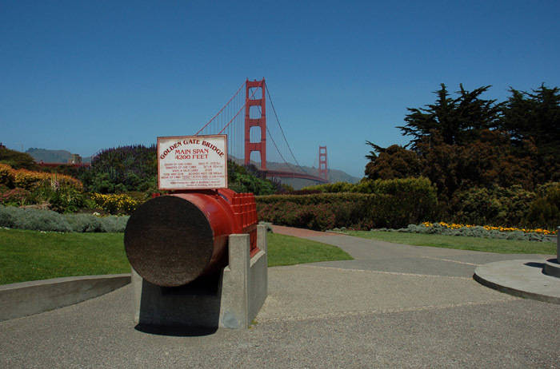 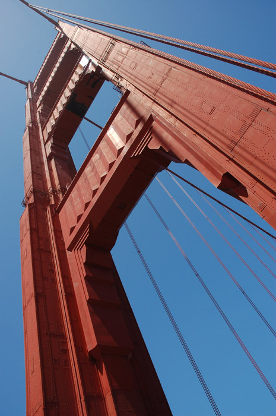 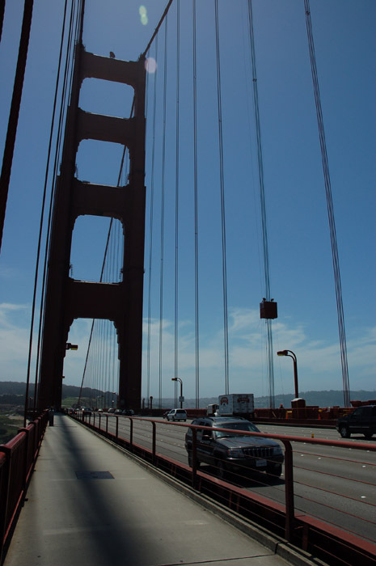 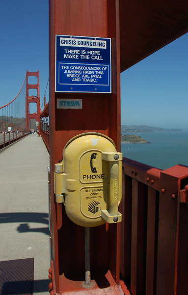 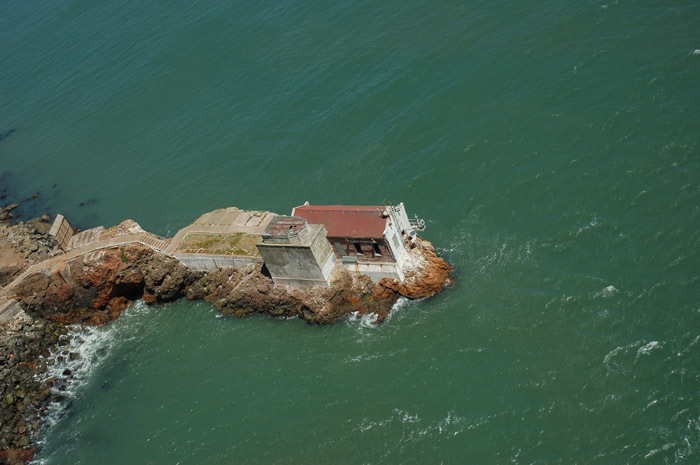 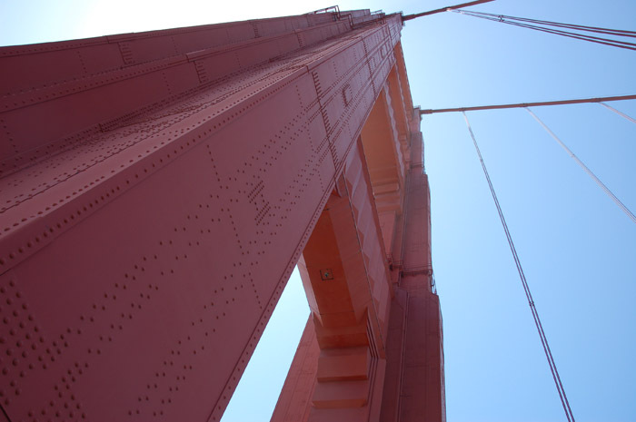 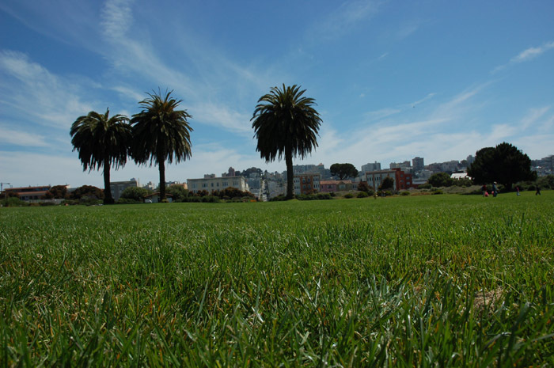 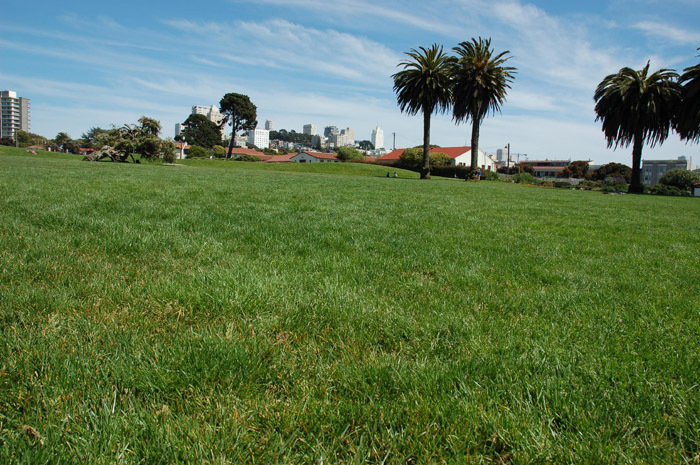